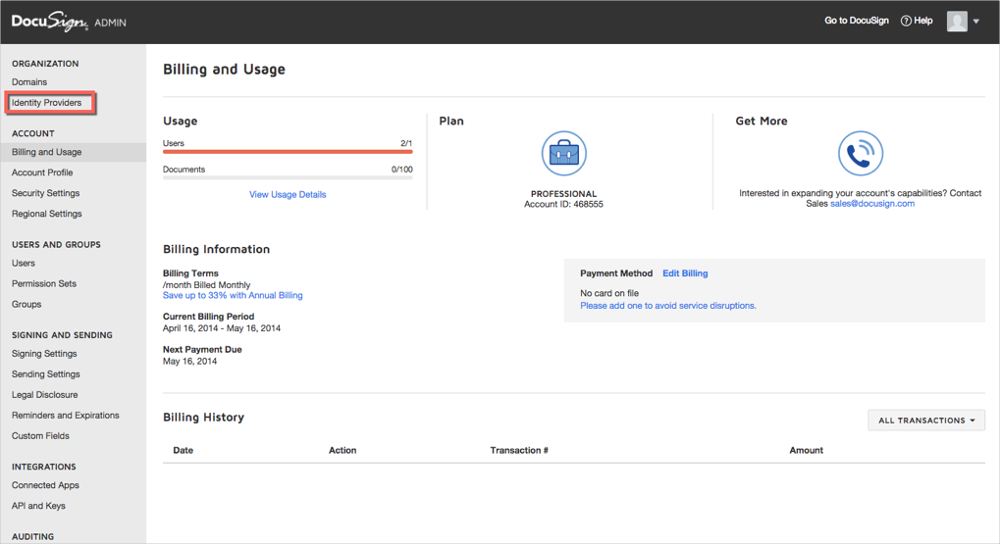
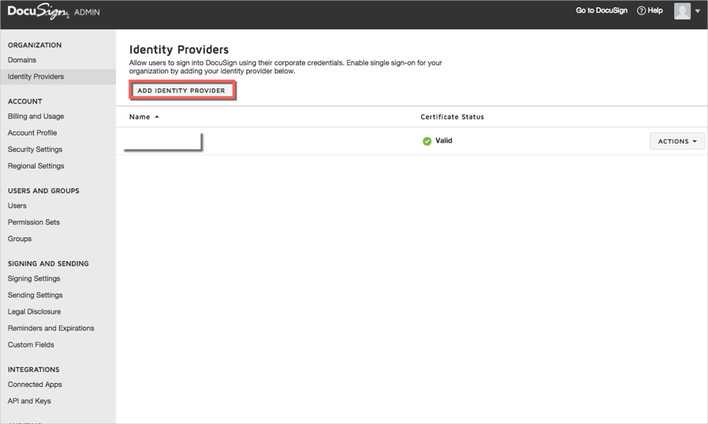
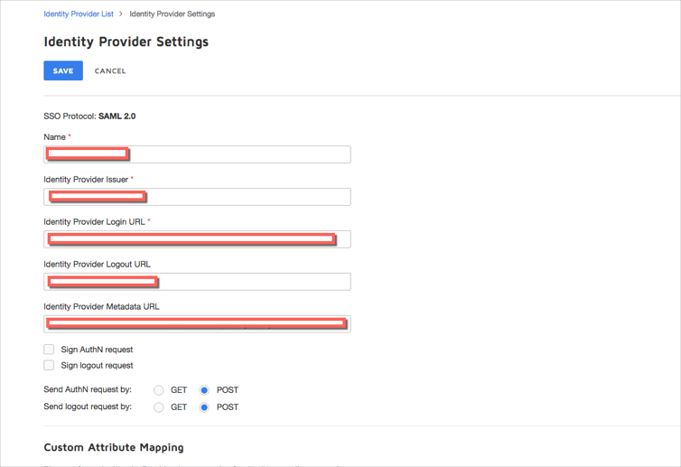
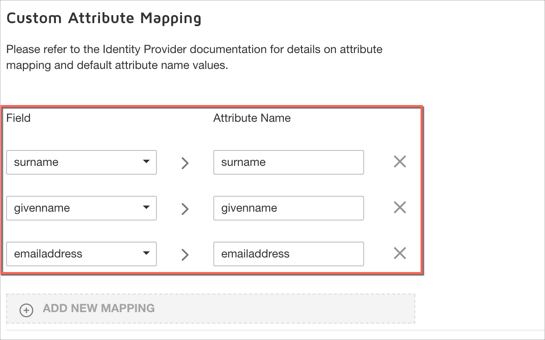
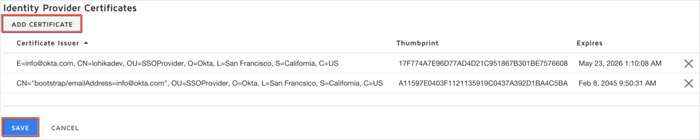
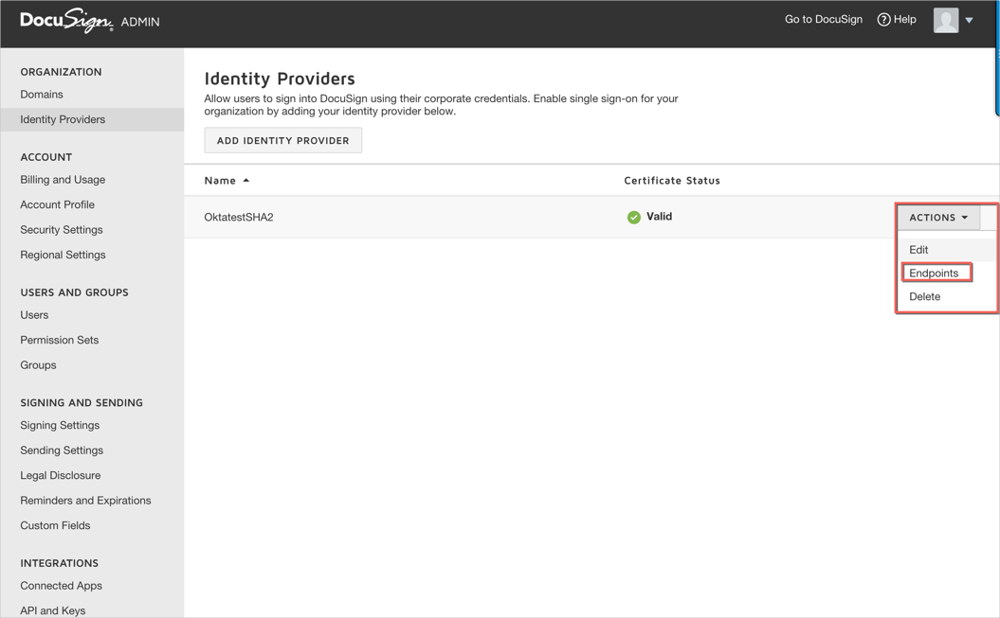
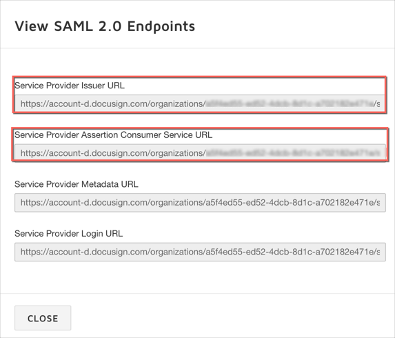
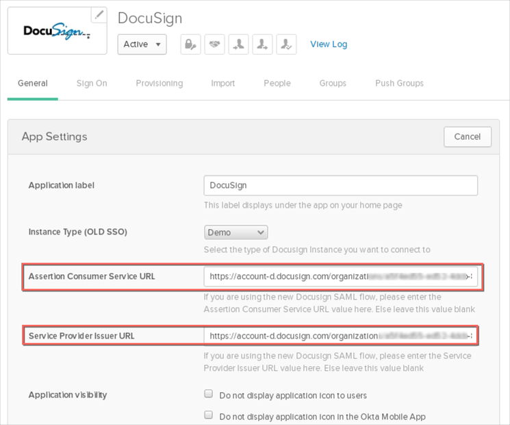

The DocuSign Enterprise Edition is required to use SAML. In addition, DocuSign charges a one-time activation fee for SAML. Contact your DocuSign sales representative for pricing details.
We have two sets of instructions, one for older DocuSign tenants, one for newer tenants. It should be clear when you log in to DocuSign what functionality is available for you.
If you have a new DocuSign tenant, follow the steps below to set up SAML:
Log into your DocuSign Tenant's admin section as a user with administrator privileges.
Navigate to the Identity Providers section:

Note that if you are unable to see these options, you probably have an older DocuSign tenant, see Old DocuSign Tenants for instructions.
Click on ADD IDENTITY PROVIDER:

Enter the following (see screen shot at end of step for reference):
Name: Enter a name for the Identity Provider.
Identity Provider Issuer: Copy and paste the following:
Sign into the Okta Admin Dashboard to generate this variable.
Identity Provider Login URL: Copy and paste the following:
Sign into the Okta Admin Dashboard to generate this variable.
Identity Provider Logout URL: Copy and paste the following:
Sign into the Okta Admin Dashboard to generate this variable.
For Send Authn Request by, select POST.
For Select Send Logout Request by, select POST.

Scroll down to the Custom Attribute Mapping section, click ADD NEW MAPPING then add the following three mappings:
Select surname from the Field dropdown menu, then type surname in the Attribute field.
Select givenname from the Field dropdown menu, then type givenname in the Attribute field.
Select emailaddress from the Field dropdown menu, then type emailaddress in the Attribute field.

In the Identity Provider Certificates section:
First download the following x.509 certificate in .cert Format:
Sign into the Okta Admin Dashboard to generate this variable.
Click ADD CERTIFICATE, then upload the certificate you just downloaded.
Click SAVE.

Back in the Identity Providers section, select Endpoints from the ACTIONS dropdown menu for the Identity Provider you just created.

Make a copy of the values for the Service Provider Issuer URL and the Service Provider Assertion Consumer Service URL as shown below, then click CLOSE:

In Okta, select the General tab for the DocuSign app, click Edit, then enter the following:
Assertion Consumer Service URL: Enter the value you copied from DocuSign’s Service Provider Assertion Consumer Service URL field.
Service Provider Issuer URL: Enter the value you copied from DocuSign’s Service Provider Issuer URL field.
Click Save

Please contact your DocuSign account manager to get your DocuSign account setup for SAML 2.0 access. Copy and paste the fields below to compose the message, substituting your company name for <YOUR COMPANY>.
Download the following Identity Provider Certificate and attach it to your email.
Log into Okta admin app to have this variable generated for you.Send the email and wait for further instructions from DocuSign on how to enable SAML for your organization.